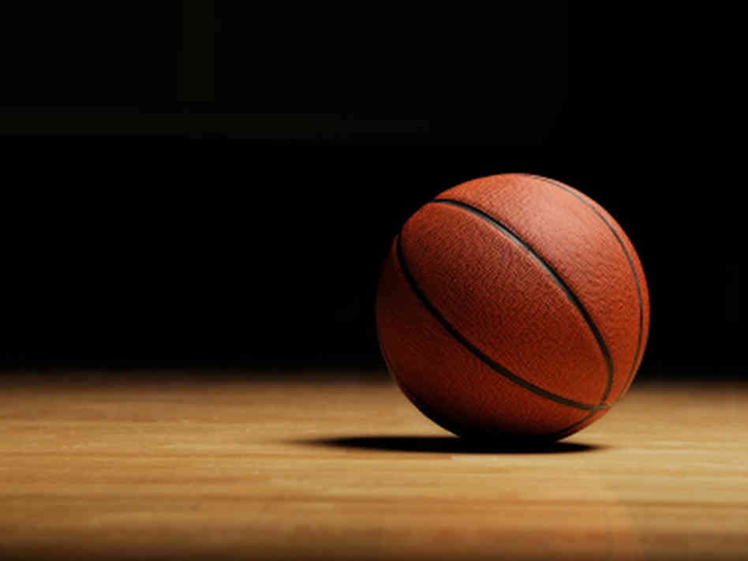
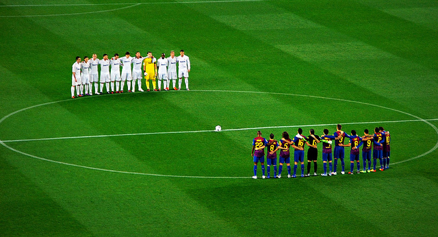
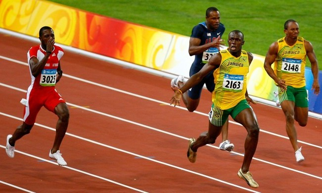
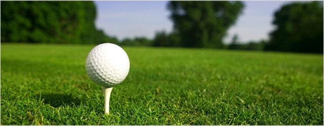
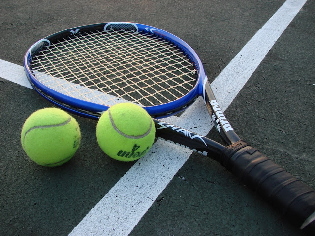
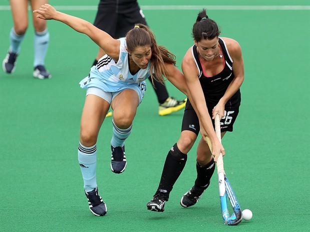
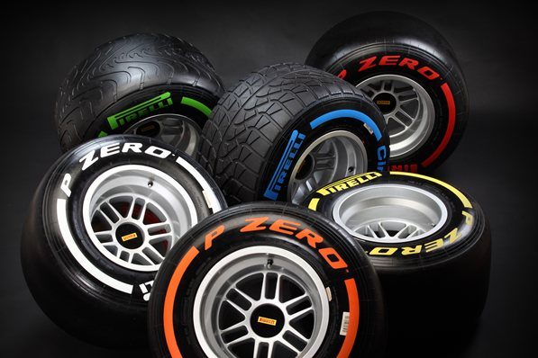
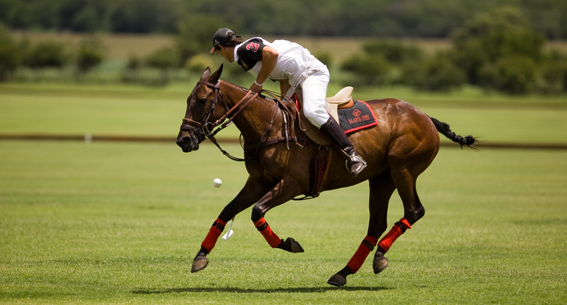
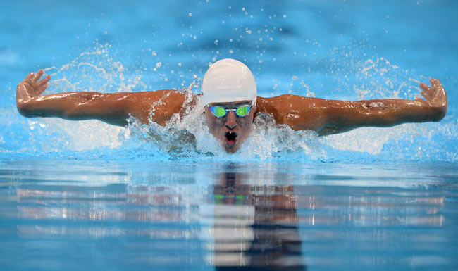

Basquet
El baloncesto, basquetbol o básquetbol (del inglés basketball; de basket, 'canasta', y ball, 'pelota'),o simplemente básquet, es un deporte de equipo que se puede desarrollar tanto en pista cubierta como en descubierta, en el que dos conjuntos de cinco jugadores cada uno, intentan anotar puntos, también llamados canastas o dobles y/o triples. Futbol
El fútbol o futbol (del inglés británico football), también conocido como balompié, es un deporte de equipo jugado entre dos conjuntos de once jugadores cada uno y algunos árbitros que se ocupan de que las normas se cumplan correctamente. Es ampliamente considerado el deporte más popular del mundo, pues lo practican unos 270 millones de personas. Atletismo
El atletismo es un deporte que contiene un gran conjunto de disciplinas agrupadas en carreras, saltos, lanzamientos, pruebas combinadas y marcha. Es el arte de superar el rendimiento de los adversarios en velocidad o en resistencia, en distancia o en altura. Golf
El golf es un deporte de precisión cuyo objetivo es introducir una bola en los hoyos que están distribuidos en el campo con el menor número de golpes, utilizando para cada tipo de golpe uno de entre un conjunto de palos ligeramente diferentes entre sí. Tenis
El tenis es un deporte de raqueta que se practica sobre una cancha rectangular delimitada por líneas y dividida por una red. Se disputa entre dos jugadores (individuales) o entre dos parejas (dobles). El objeto del juego es lanzar una pelota golpeándola con la raqueta de modo que bote dentro del campo del rival procurando que éste no pueda devolverla. Hockey
El hockey o jóquey es una familia de deportes en la cual dos equipos compiten para llevar una pelota de un material duro (aluminio) o un disco de corcho a la portería contraria para anotar un tanto con la ayuda de un bastón largo llamado "palo de hockey, o jóquey" (stick en inglés, bâton en francés). Formula 1
La Fórmula 1, a menudo abreviada como F1 y también denominada la «categoría reina del automovilismo» o «la máxima categoría del automovilismo», es la competición de automovilismo internacional más popular y prestigiosa Polo
El polo es un deporte en el que dos equipos contrarios de cuatro jugadores cada uno, montados a caballo, intentan llevar una pequeña pelota de madera o plástico hacia la portería del rival, formada por dos postes de mimbre, por medio de un taco o mazo. El objetivo consiste en marcar tantos o goles. Natacion
La natación es el movimiento y el desplazamiento a través del agua mediante el uso de las extremidades corporales y por lo general sin utilizar ningún instrumento artificial. 